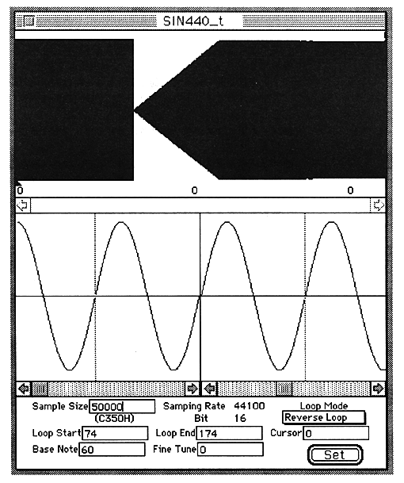

Return to previous page ｜ Return to menu ｜ Go to next page
-
Wave Edit
- Sets the edit window to the waveform display screen.

The waveform display screen is divided into three parts. The upper row is the Wave Edit screen, the middle row is the Loop Edit screen, and the lower row is the header display screen. These screens are described below.
Return to previous page ｜ Return to menu ｜ Go to next page